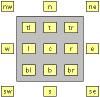
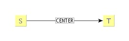
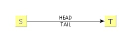
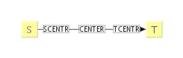
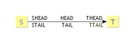
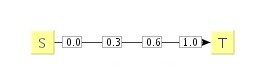
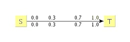
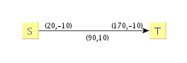

| GML | ||
|---|---|---|
| Prev | Chapter 9. Input and Output | Next |
GML, the "Graph Modeling Language," supports the entire range of possible graph structure constellations. In particular, this means that beyond "flat" graphs also grouped graphs can be saved, preserving all relevant hierarchical information. This information includes, e.g., any inter-edges from the hierarchy, the structure of any inner graphs, and whether a node containing an inner graph is a group node or a folder node.
Example 9.20, “GML representation” shows the GML representation for the example graph from Figure 9.4, “A simple graph”.
The GML format in its entirety is exhaustively presented in the section called “GML File Format”.
Example 9.20. GML representation
Creator "yFiles"
Version 2.2
graph
[ hierarchic 1
directed 1
node
[ id 0
graphics
[ x 200.0
y 0.0
]
LabelGraphics
[ text "January" ]
]
node
[ id 1
graphics
[ x 425.0
y 75.0
]
LabelGraphics
[ text "December" ]
]
edge
[ source 1
target 0
graphics
[ Line
[ point
[ x 425.0
y 75.0
]
point
[ x 425.0
y 0.0
]
point
[ x 200.0
y 0.0
]
]
]
LabelGraphics
[ text "Happy New Year!"
model "six_pos"
position "head"
]
]
]
A GML file is written using class GMLIOHandler .
The code fragment in Example 9.21, “Instantiating a GMLIOHandler” shows how to instantiate
a GMLIOHandler and using it to write a graph to file.
.
The code fragment in Example 9.21, “Instantiating a GMLIOHandler” shows how to instantiate
a GMLIOHandler and using it to write a graph to file.
Adding custom data from a graph to a GML file can be accomplished by providing
appropriate encoder and parser logic.
In package y.io.gml reside the classes for the default GML encoding and parsing behavior.
These classes cover all sorts of graph elements, i.e., nodes and edges, but
also hierarchy nodes and inter-edges.
For any of these elements there are classes available for both input and
output, i.e., to encode the respective item and to parse it.
reside the classes for the default GML encoding and parsing behavior.
These classes cover all sorts of graph elements, i.e., nodes and edges, but
also hierarchy nodes and inter-edges.
For any of these elements there are classes available for both input and
output, i.e., to encode the respective item and to parse it.
Replacing the default GML I/O logic with customized behavior takes place at the level of these classes. Due to the nature of both the GML encoding as well as its parsing process, however, there have to be provided additional classes, so-called factories. These classes are responsible for instantiating the customized classes each time the encoding or parsing process needs the respective functionality.
The factories have to be properly registered with the GMLIOHandler instance
that is used for file I/O.
This is done using the following methods from class GMLIOHandler.
Accordingly, the registered factories implement interfaces
EncoderFactory and
ParserFactory
and
ParserFactory , respectively.
, respectively.
static void setEncoderFactory(EncoderFactory _encoderFactory) |
|
| Description | Methods to register custom factories with a GMLIOHandler. |
The following tables describe all GML features, the attributes, and keys/tags
that are handled by class GMLIOHandler .
.
Table 9.4. Type explanations
| Type | Description |
|---|---|
| attribute [String] | A key/value pair where the value is a quoted string. |
| attribute [Integer] | A key/value pair where the value is an unquoted signed integer. |
| attribute [Double] | A key/value pair where the value is an unquoted signed real number in double precision. |
| attribute [Integer / Boolean] | A key/value pair where the value is an unquoted signed integer. Non-negative values are interpreted as true by the parser. |
| attribute [String / Color] | A key/value pair where the value is a quoted string of the form #RRGGBB or #RRGGBBAA, alternatively. Each of the pairs is a hexadecimal value in the range 00 to FF that represents the red (RR), green (GG), blue (BB), and alpha (AA) component of the given color. |
| section (single) | A key/value pair where the value is a compound of an arbitrary number of allowed key/value pairs all enclosed in brackets, i.e., '[' and ']'. |
| section (multiple) | Multiple key/value pairs in direct sequence where the values are compounds of an arbitrary number of allowed key/value pairs all enclosed in brackets, i.e., '[' and ']'. |
The base set of GML tags. These are essential to save the structure of a graph.
Table 9.5. GML toplevel
| Item | Type | Description | Parsed | Written |
|---|---|---|---|---|
| .Creator | attribute [String] | The name of the creator of the file. | No | Yes |
| .Version | attribute [Double] | The version of the creator. | No | Yes |
| .graph | section (single) | The actual graph data. | Yes | Yes |
Table 9.6. GML .graph level
| Item | Type | Description | Parsed | Written |
|---|---|---|---|---|
| .label | attribute [String] | The textual name of the graph. | No | Yes |
| .directed | attribute [Integer / Boolean] | Predicate whether edges are directed. | No | Yes |
| .node | section (multiple) | A simple node. | Yes | Yes |
| .edge | section (multiple) | A simple edge. | Yes | Yes |
| .defaultnodesize | attribute [String] | May be set to 'labelsize'. The parser will automatically assign a size for nodes where width or height is not set. | Yes | No |
| .defaultnodeinsetshorizontal | attribute [Integer] | Used in conjunction with defaultnodesize = 'labelsize'. Determines horizontal insets between label and node border. | Yes | No |
| .defaultnodeinsetsvertical | attribute [Integer] | Used in conjunction with defaultnodesize = 'labelsize'. Determines vertical insets between label and node border. | Yes | No |
| .defaultnodeminwidth | attribute [Integer] | Used in conjunction with defaultnodesize = 'labelsize'. Determines minimal width of automatically assigned widths. | Yes | No |
| .defaultnodeminheight | attribute [Integer] | Used in conjunction with defaultnodesize = 'labelsize'. Determines minimal height of automatically assigned heights. | Yes | No |
Table 9.7. GML .graph.node level
| Item | Type | Description | Parsed | Written |
|---|---|---|---|---|
| .id | attribute [Integer] | The unique node ID. | Yes | Yes |
| .name | attribute [String] | The textual name of the node (label). | Yes | No |
| .label | attribute [String] | The textual name of the node (label). | Yes | Yes |
| .graphics | section (single) | The graphical representation of the node. | Yes | Yes |
| .LabelGraphics | section (multiple) | Label graphics definitions. | Yes | Yes |
Table 9.8. GML .graph.node.graphics level
| Item | Type | Description | Parsed | Written | ||||||||||||||||||||||||
|---|---|---|---|---|---|---|---|---|---|---|---|---|---|---|---|---|---|---|---|---|---|---|---|---|---|---|---|---|
| .x | attribute [Double] | The x-coordinate of the center of the node. | Yes | Yes | ||||||||||||||||||||||||
| .y | attribute [Double] | The y-coordinate of the center of the node. | Yes | Yes | ||||||||||||||||||||||||
| .w | attribute [Double] | The width of the node. | Yes | Yes | ||||||||||||||||||||||||
| .h | attribute [Double] | The height of the node. | Yes | Yes | ||||||||||||||||||||||||
| .type | attribute [String] |
The name of the shape type.
This is one of: "ellipse"/"oval"/"circle", "rectangle", "triangle",
"parallelogram", "hexagon", "diamond", "octagon", "roundrectangle",
"rectangle3d", "trapezoid", "trapezoid2".
|
Yes | Yes | ||||||||||||||||||||||||
| .dropShadowColor | attribute [Color] | The color of a node's drop shadow. | Yes | Yes | ||||||||||||||||||||||||
| .dropShadowOffsetX | attribute [Double] | The drop shadow's x-offset. | Yes | Yes | ||||||||||||||||||||||||
| .dropShadowOffsetY | attribute [Double] | The drop shadow's y-offset. | Yes | Yes | ||||||||||||||||||||||||
| .image | attribute [String] | The URL of the image used for image nodes. | Yes | Yes | ||||||||||||||||||||||||
| .alphaImage | attribute [Integer / Boolean] | Whether or not alpha transparency is supported to modify an image node's hit-testing behavior. | Yes | Yes | ||||||||||||||||||||||||
| .customconfiguration | attribute [String] | The configuration of a generic node. | Yes | Yes | ||||||||||||||||||||||||
| .userdataclass | attribute [String] | The class name for the user data part of a generic node. | Yes | Yes | ||||||||||||||||||||||||
| .userdata | attribute [String] | The user data part of a generic node. | Yes | Yes | ||||||||||||||||||||||||
| .fill | attribute [Color] | The fill color of the node. | Yes | Yes | ||||||||||||||||||||||||
| .hasFill | attribute [Integer / Boolean] | Whether or not the node has a fill color. | Yes | Yes | ||||||||||||||||||||||||
| .fill2 | attribute [Color] | A second fill color for a node. | Yes | Yes | ||||||||||||||||||||||||
| .outline | attribute [Color] | The stroke color used for the node. | Yes | Yes | ||||||||||||||||||||||||
| .hasOutline | attribute [Integer / Boolean] | Whether or not the node has an outline. | Yes | Yes | ||||||||||||||||||||||||
| .width | attribute [Integer] | The line width of the outline. | Yes | No | ||||||||||||||||||||||||
| .outlineWidth | attribute [Integer] | The line width of the outline. | Yes | Yes | ||||||||||||||||||||||||
| .outlineStyle | attribute [String] | The name of the outline style. This is one of: "line", "dashed", "dotted". | Yes | Yes |
Table 9.9. GML .graph.node.LabelGraphics level
| Item | Type | Description | Parsed | Written |
|---|---|---|---|---|
| .type | attribute [String] | The content type of the label, either "text" for textual labels or "index_label" for automatic numeric labels. | Yes | No |
| .text | attribute [String] | The label's text. | Yes | Yes |
| .outline | attribute [Color] | The outline color of the label. | Yes | Yes |
| .fill | attribute [Color] | The background color of the label. | Yes | Yes |
| .color | attribute [Color] | The text color of the label. | Yes | Yes |
| .model | attribute [String] | The label model. Only written when the label model is not internal, and does not contain the entire set of positions outside the node. | Yes | Yes |
| .anchor | attribute [String] |
The anchor type of the label that determines the position of the label
relative to its node.
Positions within the node are "c", "t", "tl", "tr", "l", "r", "bl", "b", or
"br".
Positions around the node are "n", "ne", "e", "se", "s", "sw", "w", or "nw".

|
Yes | Yes |
| .x | attribute [Double] | The absolute x-coordinate of the label. This value will only be written if the label position does not correspond to a predefined label anchor. Also, this value will only be read if no label anchor is specified. | Yes | Yes |
| .y | attribute [Double] | The absolute y-coordinate of the label. This value will only be written if the label position does not correspond to a predefined label anchor. Also, this value will only be read if no label anchor is specified. | Yes | Yes |
| .borderDistance | attribute [Double] | The distance between label and the node's border. | Yes | Yes |
| .autoSizePolicy | attribute [String] | The auto sizing policy of the label. This is one of: "node_height", "node_width", or "content". | Yes | Yes |
| .fontSize | attribute [Integer] | The size of the label font. | Yes | Yes |
| .fontStyle | attribute [String] | The style of the label font, either "plain", "italic" or "bold". | Yes | Yes |
| .fontName | attribute [String] | The logical name of the label font, either "Dialog", "DialogInput", "Monospaced", "Serif", "SansSerif", or "Symbol". | Yes | Yes |
| .alignment | attribute [String] | The alignment of multi-line label, either "center", "left" or "right". | Yes | Yes |
| .rotationAngle | attribute [Double] | The label's rotation angle. | Yes | Yes |
| .icon | attribute [String] | URL for the icon's image. | Yes | No |
| .horizontalTextPosition | attribute [String] | A label's horizontal text positioning. This is one of: "left", "left_aligned", "center", "right", or "right_aligned". | Yes | No |
| .verticalTextPosition | attribute [String] | A label's vertical text positioning. This is one of: "top", "center", or "bottom". | Yes | No |
| .iconTextGap | attribute [Integer] | Distance between icon and label text. | Yes | No |
| .underlineText | attribute [Integer / Boolean] | Whether the label's text is underlined. | Yes | Yes |
| .visible | attribute [Integer / Boolean] | Whether the label is visible. | Yes | Yes |
Table 9.10. GML .graph.edge level
| Item | Type | Description | Parsed | Written |
|---|---|---|---|---|
| .source | attribute [Integer] | The ID of the source node (.graph.node.id). | Yes | Yes |
| .target | attribute [Integer] | The ID of the target node (.graph.node.id). | Yes | Yes |
| .label | attribute [String] | The textual name of the edge (label). | Yes | Yes |
| .graphics | section (single) | The graphical representation of the edge. | Yes | Yes |
| .edgeAnchor | section (single) | The port definitions. | Yes | Yes |
| .LabelGraphics | section (multiple) | Label graphics definitions. | Yes | Yes |
Table 9.11. GML .graph.edge.graphics level
| Item | Type | Description | Parsed | Written |
|---|---|---|---|---|
| .type | attribute [String] | The name of the linetype. This is one of: "arc", "spline", "bezier", or "quadCurve". | Yes | Yes |
| .quadCurveStraightness | attribute [Double] | The straightness of a quad curve edge. | Yes | Yes |
| .customconfiguration | attribute [String] | The configuration of a generic edge. | Yes | Yes |
| .userdataclass | attribute [String] | The class name for the user data part of a generic edge. | Yes | Yes |
| .userdata | attribute [String] | The user data part of a generic edge. | Yes | Yes |
| .smoothBends | attribute [Integer / Boolean] | Whether the edge has smoothed bends. | Yes | Yes |
| .width | attribute [Integer] | The stroke width used for the line. | Yes | Yes |
| .style | attribute [String] | The style used for the line. This is one of: "line", "dashed", "dotted". | Yes | Yes |
| .fill | attribute [String] | The color of the line. | Yes | Yes |
| .arrow | attribute [String] | "last", "first", or "both" depending on whether there are arrowheads at the edge's source end and target end. | Yes | No |
| .sourceArrow | attribute [String] | The type of the arrowhead at the edge's source end. This is one of: "delta", "standard", "diamond", "short", "white_delta", "white_diamond", or "none". If the arrowhead is of custom type, its name is encoded. | Yes | Yes |
| .targetArrow | attribute [String] | The type of the arrowhead at the edge's target end. This is one of: "delta", "standard", "diamond", "short", "white_delta", "white_diamond", or "none". If the arrowhead is of custom type, its name is encoded. | Yes | Yes |
| .reversedPathRendering | attribute [Integer / Boolean] | Whether the edge's path is rendered starting at the target end instead of the source end. | Yes | Yes |
| .arcType | attribute [String] | The type of an arc edge. This is one of: "fixedHeight" or "fixedRatio". | Yes | Yes |
| .arcHeight | attribute [Double] | The height of an arc edge. | Yes | Yes |
| .arcRatio | attribute [Double] | The ration of an arc edge. | Yes | Yes |
| .line | section (single) | The positions of the ports and bends of the edge. | Yes | Yes |
Table 9.12. GML .graph.edge.graphics.line level
| Item | Type | Description | Parsed | Written |
|---|---|---|---|---|
| .point | section (multiple) | A single bend or port. | Yes | Yes |
Table 9.13. GML .graph.edge.graphics.line.point level
| Item | Type | Description | Parsed | Written |
|---|---|---|---|---|
| .x | attribute [Double] | The x-coordinate of the point. | Yes | Yes |
| .y | attribute [Double] | The y-coordinate of the point. | Yes | Yes |
Table 9.14. GML .graph.edge.LabelGraphics level
| Item | Type | Description | Parsed | Written |
|---|---|---|---|---|
| .type | attribute [String] | The content type of the label, either "text" for textual labels or "index_label" for automatic numeric labels. | Yes | No |
| .text | attribute [String] | The label's text. | Yes | Yes |
| .outline | attribute [Color] | The border color of the label. | Yes | Yes |
| .fill | attribute [Color] | The background color of the label. | Yes | Yes |
| .color | attribute [Color] | The text color of the label. | Yes | Yes |
| .model | attribute [String] | The model of the label that determines how to interpret the position of a label. Known models are "center_slider", "side_slider", "six_pos", "three_center", "two_pos", "free" and "centered". For each model certain label positions can be assigned (see below). | Yes | Yes |
| .position | attribute [String] |
The symbolic position of the label, that determines the actual position of
the label.
Known positions are "scentr", "center" "tcentr", "shead", "head" "thead",
"stail", "tail" and "ttail".
The available edge label models are "CENTERED", "TWO_POS", "THREE_CENTER",
and "SIX_POS".

"CENTERED"

"TWO_POS"

"THREE_CENTER"

"SIX_POS"
|
Yes | Yes |
| .x | attribute [Double] | The absolute x-coordinate of the label. This value must be used to specify the position of the label for the label model types "center_slider", "side_slider" and "free". | Yes | Yes |
| .y | attribute [Double] |
The absolute y-coordinate of the label.
This value must be used to specify the position of the label for the label
model types "center_slider", "side_slider" and "free".

"CENTER_SLIDER"

"SIDE_SLIDER"

"FREE"
|
Yes | Yes |
| .fontSize | attribute [Integer] | The size of the label font. | Yes | Yes |
| .fontStyle | attribute [String] | The style of the label font, either "plain", "italic" or "bold". | Yes | Yes |
| .fontName | attribute [String] | The logical name of the label font, either "Dialog", "DialogInput", "Monospaced", "Serif", "SansSerif", or "Symbol". | Yes | Yes |
| .alignment | attribute [String] | The alignment of multi-line label, either "center", "left" or "right". | Yes | Yes |
| .rotationAngle | attribute [Integer] | The label's rotation angle. | Yes | Yes |
| .icon | attribute [String] | URL for the icon's image. | Yes | No |
| .horizontalTextPosition | attribute [String] | A label's horizontal text positioning. This is one of: "left", "left_aligned", "center", "right", or "right_aligned". | Yes | No |
| .verticalTextPosition | attribute [String] | A label's vertical text positioning. This is one of: "top", "center", or "bottom". | Yes | No |
| .iconTextGap | attribute [Integer] | Distance between icon and label text. | Yes | No |
| .underlineText | attribute [Integer / Boolean] | Whether the label's text is underlined. | Yes | Yes |
| .visible | attribute [Integer / Boolean] | Whether the label is visible. | Yes | Yes |
Table 9.15. GML .graph.edge.edgeAnchor level
| Item | Type | Description | Parsed | Written |
|---|---|---|---|---|
| .xSource | attribute [Double] | The position of the source port x-coordinate relative to half its width measured from the center of the node. | Yes | Yes |
| .ySource | attribute [Double] | The position of the source port y-coordinate relative to half its height measured from the center of the node. | Yes | Yes |
| .xTarget | attribute [Double] | The position of the target port x-coordinate relative to half its width measured from the center of the node. | Yes | Yes |
| .yTarget | attribute [Double] | The position of the target port x-coordinate relative to half its height measured from the center of the node. | Yes | Yes |
Extension to the base set of GML tags that model nested graphs, inner nodes, group nodes, and edges between different hierarchy levels (so-called inter-edges).
Table 9.16. GML .graph level
| Item | Type | Description | Parsed | Written |
|---|---|---|---|---|
| .hierarchic | attribute [Integer / Boolean] | Predicate whether the graph may contain subfolders and/or group nodes. | No | Yes |
| .interedge | section (multiple) | An inter-edge definition. | Yes | Yes |
Table 9.17. GML .graph.node level
| Item | Type | Description | Parsed | Written |
|---|---|---|---|---|
| .graphUrl | attribute [String] | Definition of an inner graph, referenced by an URL. | Yes | No |
| .graph | section (single) | Inline definition of an inner graph. | Yes | Yes |
| .isGroup | attribute [Integer / Boolean] | Whether or not the node is a group node that can be referenced by other nodes using the gid attribute. | Yes | Yes |
| .gid | attribute [Integer] | The ID of the group node that this node belongs to. | Yes | Yes |
The inline definition of an inner graph using the .graph.node.graph combination is used for folder nodes.
Table 9.18. GML .graph.node.graphics level
| Item | Type | Description | Parsed | Written |
|---|---|---|---|---|
| .topBorderInset | attribute [Integer] | Top inset for a group node. | Yes | Yes |
| .bottomBorderInset | attribute [Integer] | Bottom inset for a group node. | Yes | Yes |
| .leftBorderInset | attribute [Integer] | Left inset for a group node. | Yes | Yes |
| .rightBorderInset | attribute [Integer] | Right inset for a group node. | Yes | Yes |
| .considerLabels | attribute [Integer / Boolean] | Whether a group node's label is taken into account when calculating its minimal node bounds. | Yes | Yes |
| .group | attribute [Integer / Boolean] | If the node is a generic node, whether it's a generic group node. | Yes | Yes |
| .autoResize | attribute [Integer / Boolean] | Whether a generic group node resizes automatically. | Yes | Yes |
| .closedHeight | attribute [Double] | The height of a generic group node when closed. | Yes | Yes |
| .closedWidth | attribute [Double] | The width of a generic group node when closed. | Yes | Yes |
| .borderInsetBottom | attribute [Integer] | Bottom inset for a generic group node. | Yes | Yes |
| .borderInsetLeft | attribute [Integer] | Left inset for a generic group node. | Yes | Yes |
| .borderInsetTop | attribute [Integer] | Top inset for a generic group node. | Yes | Yes |
| .borderInsetRight | attribute [Integer] | Right inset for a generic group node. | Yes | Yes |
| .minimalInsetBottom | attribute [Integer] | Bottom inset (minimal) for a generic group node. | Yes | Yes |
| .minimalInsetLeft | attribute [Integer] | Left inset (minimal) for a generic group node. | Yes | Yes |
| .minimalInsetTop | attribute [Integer] | Top inset (minimal) for a generic group node. | Yes | Yes |
| .minimalInsetRight | attribute [Integer] | Right inset (minimal) for a generic group node. | Yes | Yes |
| .closed | attribute [Integer / Boolean] | Whether a generic group node is closed or not. | Yes | Yes |
Table 9.19. GML .graph.edge level
| Item | Type | Description | Parsed | Written |
|---|---|---|---|---|
| .id | attribute [Integer] | A (scope) unique edge ID. | Yes | Yes |
Table 9.20. GML .graph.interedge level
| Item | Type | Description | Parsed | Written |
|---|---|---|---|---|
| .sourcePath | attribute [String] | The relative path of node IDs (.graph.node.id), separated by ':' to the real source node. | Yes | Yes |
| .targetPath | attribute [String] | The relative path of node IDs (.graph.node.id), separated by ':' to the real target node. | Yes | Yes |
| .representative | attribute [Integer] | The ID of the representing edge in this graph (.graph.edge.id). | Yes | Yes |
The encoding of an inter-edge uses two key/value pairs to define a path-like expression that uniquely identifies both its source and target node. The expression is the sequence of node IDs starting from the current graph scope and descending into the nested graph structure. The separating colon (':') models the transition to a deeper hierarchy level.
|
Copyright ©2004-2015, yWorks GmbH. All rights reserved. |